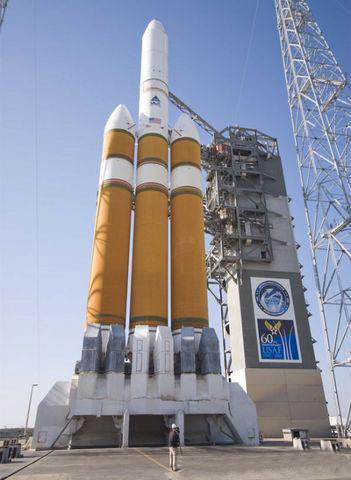
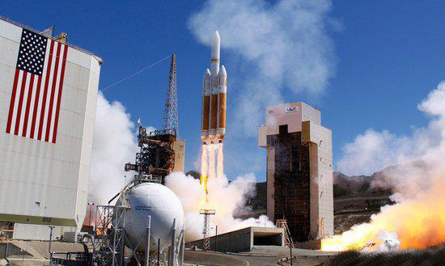

2020年5月18日
德尔塔IV型重型火箭
德尔塔IV型重型火箭是美国现役并已执行任务的最大型运载火箭，这种火箭可以将最多28.790吨的有效载荷送入低地轨道。 将11吨有效载荷送入通信卫星所在的地球同步轨道。另据报道，还能将11吨重有效载荷送上月球，将8.8吨有效载荷送入火星轨道。 德尔塔IV型重型高235英尺(约合72米)，第一级由三个公共核心助推器(Common Core Booster)组成，呈一字形直线排列。

德尔塔IV型
该火箭拥有主要的通用助推核心，还包括两个附加的捆绑式助推器。这三个助推器各自装有的RS-68发动机。 重型火箭的第二级还有一个直径为5米的燃料箱和直径为5米的载运物设施配件。
